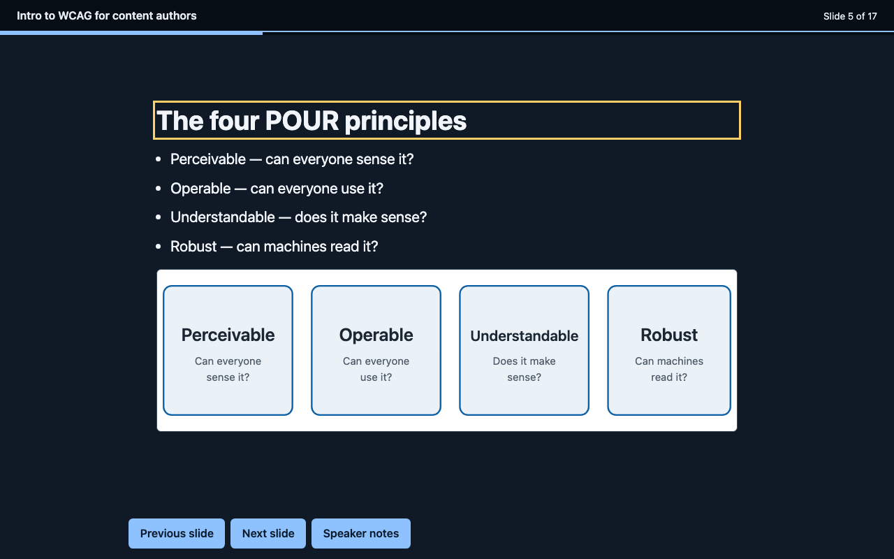
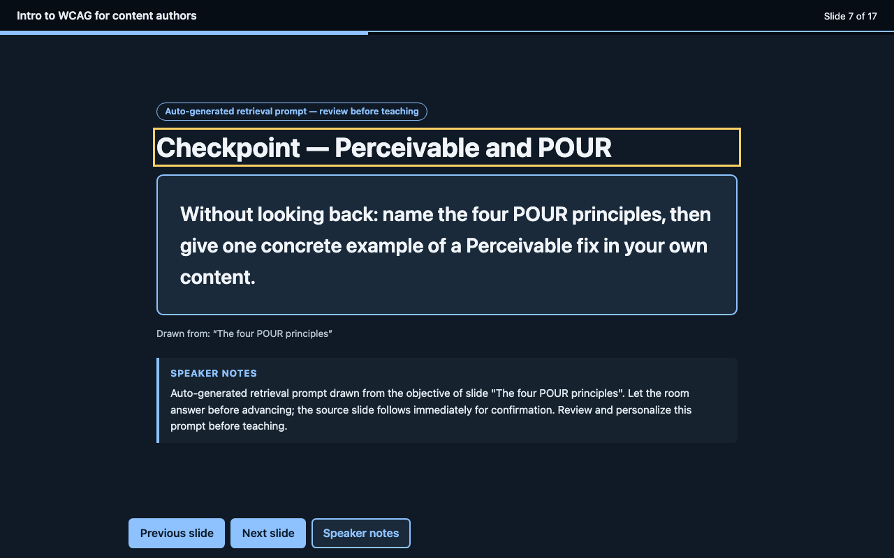
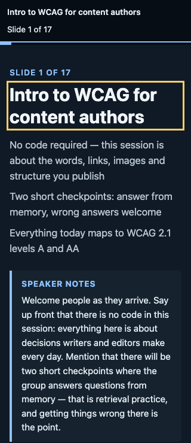

What is real here: the pipeline, the gate runner, and the reference deck are working software — every gate result below is reproducible with the commands shown. What is not: no human or assistive-technology user has reviewed the output yet (see Evidence and evaluation), and the checkpoint questions are template-generated, not written by an educator.
The problem
The best open-source deck generators make beautiful slides and treat accessibility as a claim, not a gate. Real decks shipped to students fail on predictable things: missing alt text, low contrast, heading-order chaos, keyboard-dead HTML decks, and speaker notes nobody wrote. PowerPoint's own checker only runs after the fact, inside PowerPoint, by someone who remembers to run it.
slidewalk inverts that: accessibility is a build gate with veto power. If the deck fails, the build fails, with a fix list.
Audience and context
Curriculum developers and instructional designers who produce teaching decks on deadlines. They usually don't write code; they do write outlines. The tool takes the artifact they already have — a lesson outline — and returns the two artifacts they must deliver: a web deck and a PPTX.
The pipeline
lesson outline (markdown)
→ intermediate deck JSON (validated: alt text required, no orphan checkpoints)
→ single-file HTML deck (keyboard nav, notes toggle, 320px reflow safe)
→ native PPTX (python-pptx: real text frames, notes per slide)
→ facilitator guide (md) (objectives, notes, checkpoint prompts)
→ accessibility gates (axe · keyboard · 320px · contrast · alt · headings · lang)
└─ failure = non-zero exit + actionable fix list
Key design decisions
1. Gates run against all slides, not just the visible one
Decision: the gate runner unhides every slide before running axe, then audits the interactive behavior separately on the real page. Alternative considered: running axe on each slide in isolation. Rationale: hidden slides are invisible to axe's default run — a deck would pass while slides 2–17 were unaudited. This caught real contrast bugs in an early theme during development.
2. The alt-text rule lives in the validator, not just the gate
Decision: the deck JSON validator refuses to build any deck with an informative image that lacks alt text — before any output exists. The gate runner checks it again on the HTML. Rationale: failing late costs a rebuild; failing early costs a one-line outline edit. The rule is enforced twice on purpose.
3. Checkpoints are template-generated and labeled, never faked
Decision: retrieval-practice prompts are derived by template from each slide's own objective, inserted every N content slides, and visibly labeled "Auto-generated retrieval prompt — review before teaching". Alternative considered: calling an LLM to write questions. Rationale: unlabeled AI questions would be unreviewable pedagogy; template prompts are honest, reproducible, and cite their source slide, and the facilitator guide instructs the educator to personalize them.
4. Dual format from one intermediate JSON
Decision: outline → deck JSON → {HTML, PPTX, guide}. Alternative considered: generating PPTX from the HTML. Rationale: a shared intermediate format means a gate fix or an outline edit regenerates both formats identically. The known cost: PPTX figures are text placeholders (see limitations).
5. Themes are gated assets, verified before anything is built on them
Decision: each of the three themes (slate, midnight, ember) is rendered on a fixed probe deck and must pass every gate before use. Rationale: theme palettes are where contrast failures breed; gating them once means every deck built on them inherits a verified palette.
The reference deck
"Intro to WCAG for content authors" — 17 slides (11 content, 3 sections, 2 checkpoints, 1 title), generated by the full pipeline, all gates green. This deck is itself the demo deliverable:
- Open the HTML deck (deck.html) — keyboard-navigable: arrows, Space, PageUp/PageDown, Home/End; press N for speaker notes
- Download the PPTX (deck.pptx, 71 KB) — native text frames, speaker notes on every slide
- Read the facilitator guide (facilitator-guide.md)
- Inspect the intermediate deck.json



Evidence and evaluation
What was measured (reproduce with the commands shown)
| Check | Reference deck (docs/deck.html) | Command |
|---|---|---|
| axe (WCAG 2.1 A/AA + best practice, all slides visible) | 0 critical / 0 serious / 0 moderate / 0 minor | npm run gates |
| Keyboard traversal (all 17 slides, forward + reverse + Home/End/Space + notes toggle) | PASS | npm run gates |
| 320 px reflow (every slide) | PASS | npm run gates |
| Contrast ≥ 4.5:1 (axe color-contrast) | PASS | npm run gates |
| Alt text + heading structure + lang | PASS | npm run gates |
| Theme probes (slate / midnight / ember), same gates | all PASS | npm run gates:themes |
| Negative test: broken deck → build refusal + 10 gate failures caught | PASS (gates correctly fail) | sh tests/run-negative-tests.sh |
| PPTX round-trip (zip parts + python-pptx re-read: titles, bullets, notes) | 17/17 slides verified | npm run pptx:verify |
What the evidence can and cannot show
Can: the HTML deck passes the automated WCAG 2.1 A/AA checks that axe implements, every slide is keyboard-reachable, the layout reflows at 320 px, and the gate runner demonstrably catches seeded failures (a gate that cannot fail is decoration). Cannot: show that the deck is usable with a screen reader, that the alt text is good (only that it exists), that the teaching is effective, or that the auto-generated questions are pedagogically sound. No human has tested this deck; no one using assistive technology daily has reviewed it.
What it led to
Development was driven by the gates: the first theme probes failed on duplicate landmark roles (aside speaker notes became role="note") and the gate runner's keyboard traversal caught a missing focus-management behavior. The PPTX round-trip check caught checkpoint slides silently dropping their instruction bullets. Negative tests exist because an earlier version of the gate runner crashed instead of reporting on a non-conforming deck.
Accessibility of this site and the deck
See the full accessibility statement. Short version: this page and the reference deck pass the automated checks listed above; manual and assistive-technology testing has not been done yet, and no compliance or certification is claimed.
Honest limitations
- Automated ≠ accessible. The gates cover WCAG 2.1 A/AA automated checks. Manual testing (keyboard habits vary, screen reader output, cognitive load) is still recommended before high-stakes delivery. The deck's own footer and the facilitator guide say so.
- PPTX accessibility is not enforced. PowerPoint's built-in Accessibility Checker can be recommended in the facilitator guide, but slidewalk cannot run it from code. Figures are text placeholders in the PPTX; images render only in the HTML deck.
- Checkpoints are templates. They are labeled as auto-generated, cite their source slide, and the facilitator guide instructs reviewers to personalize them before teaching.
- No LLM in the loop. Nothing calls a model; question generation is deterministic templating.
- Human review pending. The educator-review protocol is ready in
evaluation/human-protocol/; results tables stay empty until a real educator runs it.
What I'd do differently / next steps
- Round-trip the deck through a real screen reader (automated VoiceOver via Guidepup) as a future gate.
- Support images in PPTX (convert SVG → PNG at build time) and a PowerPoint theme with proper slide masters.
- Add a "bake-off" preview page that renders the user's real content in all three themes side by side.
Tools used
Node.js (deck parsing, HTML generation, gate runner), Playwright + axe-core 4.11 (gates), python-pptx 1.0.2 (PPTX generation and round-trip verification), gitleaks (secret scanning before push). AI assistance: this toolchain and its reference content were built with AI assistance and reviewed by the repository owner; the review was of code and outputs, not by an educator or an accessibility user — that review is still pending.